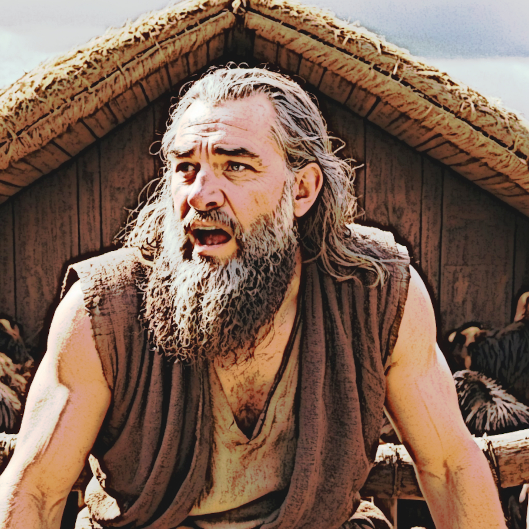

Es muss gesagt werden, dass das Buch Mose (bzw. Genesis) eine beeindrückende Zahl an Geschichten hat, die sogar unter Menschen ohne Bibelwissen bekannt sind. Diese elementalen Erzählungen bleiben einem ein Leben lang im Gedächtnis, und so ist es auch mit der Geschichte der Sintflut. Gleich zu Beginn wird uns geschildert, dass die Bosheit der Menschheit derart gesteigert sei, dass Gott es bereue, die Menschen erschaffen zu haben: „Da aber der HErr sah, dass der Menschen Bosheit groß war auf Erden und alles Dichten und Trachten ihres Herzens nur böse war immerdar, da reute es ihn, dass er die Menschen gemacht hatte auf Erden, und es bekümmerte ihn in seinem Herzen, und er sprach: Ich will die Menschen, die ich geschaffen habe, vertilgen von der Erde, vom Menschen an bis auf das Vieh und bis auf das Gewürm und bis auf die Vögel unter dem Himmel; denn es reut mich, dass ich sie gemacht habe. Aber Noah fand Gnade vor dem HErrn.” Gott plante Noah, dessen Familie und ein Kontingent an Tiere zu verschonen, so wies Gott Noah an, einen Kasten nach mitgelieferten Messungen zu bauen. Gemeinsam mit seinen 3 Söhnen und deren Weibern sollte Noah zwei von jeder Art Tier, und sogar sieben Paare von den reinen Vieh- und Vogelarten mitnehmen, dazu allerlei Speise zur Nahrung
Nun es mag uns etwas extrem vorkommen, dass Gott alle Leben auf Erde vertilgen wollen würde, denn auch wenn an der Bosheit der Menschen nicht zu zweifeln wäre, hätten die anderen Lebewesen auf Erde keine Schuld in der Hinsicht. Dennoch wurde in der Erzählung darauf hingewiesen: „Noah war ein frommer Mann und ohne Tadel und führte ein göttliches Leben zu seinen Zeiten und zeugte drei Söhne: Sem, Ham und Japheth. Aber die Erde war verderbt vor Gottes Augen und voll Frevels. Da sah Gott auf die Erde, und siehe, sie war verderbt; denn alles Fleisch hatte seinen Weg verderbt auf Erden.” Später dahingegen als alles vorbei sein würde (Kapitel 8, Verse 20 bis 21), würde Noah Gott ein Brandopfer anbieten. Danach hieß es: „Und der HErr roch den lieblichen Geruch und sprach in seinem Herzen: Ich will hinfort nicht mehr die Erde verfluchen um der Menschen willen; denn das Dichten des menschlichen Herzens ist böse von Jugend auf. Und ich will hinfort nicht mehr schlagen alles, was da lebt, wie ich getan habe.”
Faszinierend an einigen Erzählungen im Buche Mose ist die Menge an Details die uns mit auf dem Weg gegeben werden, da haben die Verfasser gute Arbeit geleistet, das Fortschreiten der Zeit in den Erzählungen zu dokumentieren. In Mose Kapitel 5 bekommen wir Details über die Stammlinie Adams bis hin zu Noah, damit bekommen wir die Jahre der Geburt und das Alter für jeden auf der Liste. Diese haben wir dokumentiert und berechnet. Wir nehmen an, dass Adam im Jahre null (aus Sicht der Menschheit) erschaffen wurde. In Mose 6,3 als Gott der Menschheit eine Frist von 120 Jahre (bis zur Sintflut) gegeben hatte, geschah dies vermutlich ca. 20 Jahre vor der Geburt Noahs Söhnne, die irgendwann im 500. Lebensjahr Noahs zur Welt kamen. Die Sintflut selbst fand im 600. Lebensahr Noahs statt. Aus allen gegebenen Details können wir berechnen, dass ca. 1.656 Jahre zwischen der Erschaffung Adams bis hin zur Sintflut verstrichen waren, es gäbe sogar ein Datum basiernd auf diese Details: 17.2.1656. Der Regen fiel 40 Tage lang, dann fing das Wasser nach 150 Tagen an, abzulassen. Bis 27.2.1657 hätten die Wasserstände zur Normalität zurückgekehrt. Mit so viel Detail in diesen Erzählungen, ist die Mühe der Verfasser offensichtlich
Was die Bedeutung dieser faszinierenden Geschichte für uns betrifft, da gibt es mehrere Möglichkeiten: Ein Beispiel wäre natürlich die Symbolik des rein werdens durch Wasser, so wie bei der Taufe. Auf jeden Fall scheint Gott in Mose Kapitel 9, Vers 11 eine Deeskalation zu wollen, wenn es darum geht, Zustände, wie vor der Sintflut, zu lösen: „Und ich richte meinen Bund also mit euch auf, dass hinfort nicht mehr alles Fleisch verderbt soll werden mit dem Wasser der Sintflut, und soll hinfort keine Sintflut mehr kommen, die die Erde verderbe.” Und als denkbare Reaktion gegen jene Zustände, scheint Gott generell härter gegen Gewalt und Mord angehen zu wollen, denn in Mose 9, 5-6 steht: „Auch will ich eures Leibes Blut rächen und will's an allen Tieren rächen und will des Menschen Leben rächen an einem jeglichen Menschen als dem, der sein Bruder ist. Wer Menschenblut vergießt, des Blut soll auch durch Menschen vergossen werden; denn Gott hat den Menschen zu seinem Bilde gemacht.” Diess ist übrigens eine Abkehr seiner Vorgehensweise in der Erzählung von Kain und Abel als Gott Kain am Leben ließ und ihn markierte, damit andere Menschen Kain nicht töten würden.
Die Sintfluterzählung scheint eine Lehre von harter Erlösung zu sein: Eskalierende Zustände wurden mit einer Eskalation Gottes wieder unter Kontrolle gebracht, nur scheint diese Erlösung nicht von entgültiger Natur zu sein, denn wie schon vorher erwähnt, bemerkte Gott, als er sich versprach, die Erde unsertwegen nie wieder zu verfluchen: „... denn das Dichten des menschlichen Herzens ist böse von Jugend auf.” Möchte man aber eine etwas realitätsbezogene Sicht der Geschichte annehmen, wissenschaftliche Studien deuten darauf hin, dass es zumindest einmal in der Geschichte der früheren Menschheit gab, als ein katastrophales Ereignis die Zahl der Menschen auf eine Zahl zwischen 1.000 bis 10.000 Personen reduzierte. Manche Studien vermuten es konnte weniger als 3.500 Menschen gewesen sein. Es wäre völlig nachvollziehbar, dass ein derart Menschheit einprägendes Ereignis dessen Weg in antiken Erzählungen finden könnte.